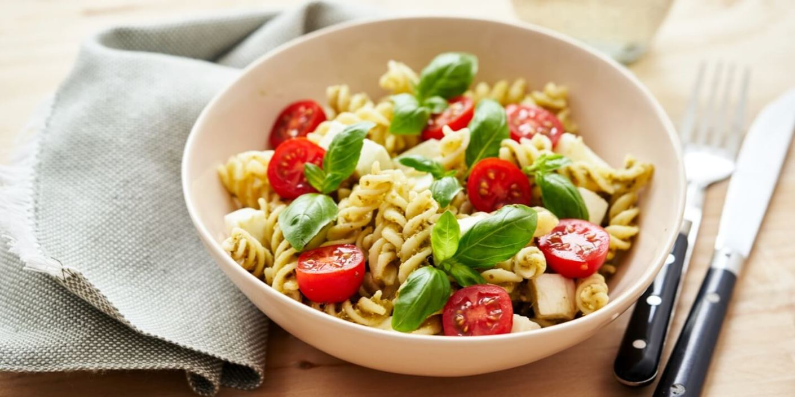

pasta gremolata

ingrediënten
- 500g farfalle
- 1el pijnboompitten
- 1 teentje knoflook
- 1 citroenschil
- 250g ricotta
- handje bladpeterselie
bereiding
- kook de pasta beetgaar in een ruime hoeveelheid gezouten water.
- snipper de peterselie en de knoflook. vermeng ze met de geraspte citroenschil.
- schep de ricotta door de warme pasta en verdeel over de borden. bestrooi met de gremolata en werk af met de pijnboompitten.